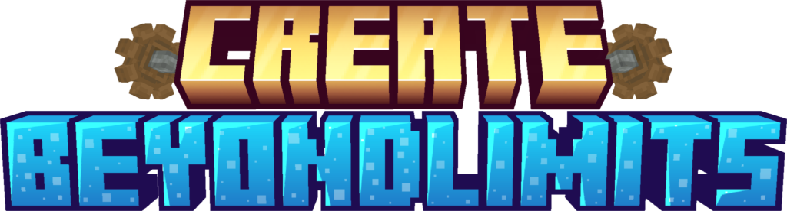

“Automation is not the end goal — evolution of systems is.”
Summer hiatus summary, new Thermal Heating (2.0.0) reveal, Conductor block progress, and upcoming release plans.
Create: Beyond Limits expands the Create mod with structured progression systems, animated machinery, and layered world interaction mechanics.
This mod does not replace Create; it evolves it. The focus is on long-term progression, structured automation logic, and immersive mechanical systems that reward planning and experimentation.